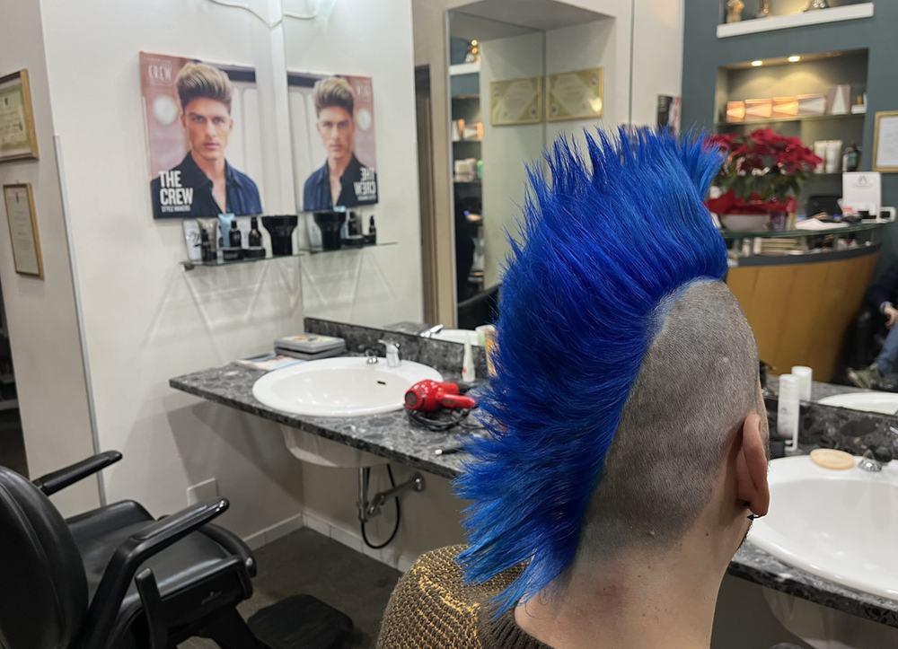

RUSSO 23belli capelli · via Meda
Trentacinque anni di mestiere, il diploma di maestro d'arte maschile e femminile dell'Accademia A.N.A.M. e gli anni tra Parigi, Londra, Amsterdam e Barcellona. Il mestiere l'ha imparato da suo padre Vincenzo, campione del mondo di acconciatura maschile. Thirty-five years at the trade, the A.N.A.M. Academy diploma as a maestro d'arte in men's and women's hairdressing, and years between Paris, London, Amsterdam and Barcelona. He learned the craft from his father Vincenzo, world champion in men's hairdressing.

d'arteAccademia A.N.A.M., maschile e femminileA.N.A.M. Academy, men's & women's
e formatoreInstructor
& trainerHa formato altri professionisti del mestiereHas trained other professionals in the trade
d'arteBorn to
the tradeDi Vincenzo Russo, campione del mondoSon of Vincenzo Russo, world champion
Raffaele Russo,
maestro d'arte.Raffaele Russo,
maestro d'arte.
In via Meda dal 1998, nello stesso locale, che è di sua proprietà. Prima: dieci anni accanto a suo padre, il diploma dell'Accademia A.N.A.M. come maestro d'arte maschile e femminile, e gli anni all'estero — Parigi, Londra, Amsterdam, Barcellona. Ne è tornato con un salone pensato per una clientela internazionale: qui si parla italiano e inglese. On via Meda since 1998, in the same premises, which he owns. Before that: ten years at his father's side, the A.N.A.M. Academy diploma as a maestro d'arte in men's and women's hairdressing, and the years abroad — Paris, London, Amsterdam, Barcelona. He came back with a salon built for an international clientele: Italian and English are both spoken here.
Ha insegnato il mestiere ad altri professionisti prima di dedicarsi soltanto ai suoi clienti. È il motivo per cui in questo salone la consulenza viene prima delle forbici: capire la testa che si ha davanti è la parte che si impara per ultima. He taught the trade to other professionals before devoting himself to his own clients. It is why, in this shop, the consultation comes before the scissors: reading the head in front of you is the part you learn last.



I lavori,
senza filtri.The work,
unfiltered.
Fotografati in salone, con la luce che c'è. Tagli uomo a forbice e rasoio, colore e balayage, pieghe e onde.Photographed in the salon, in the light we have. Men's scissor and razor cuts, colour and balayage, blow-dries and waves.


La scuola è cominciata
una generazione fa.The schooling began
a generation ago.
Raffaele ha imparato da suo padre Vincenzo, che il mestiere l'ha portato fino al titolo mondiale. Non è una catena e non vuole diventarlo: è un mestiere passato di mano una volta sola.Raffaele learned from his father Vincenzo, who took the craft as far as a world title. Not a chain, and it never wanted to be: a trade handed over exactly once.

Nasce VincenzoVincenzo is born
Cerignola, provincia di Foggia, 26 gennaio.Cerignola, province of Foggia, 26 January.
Milano, a sedici anniMilan, at sixteen
Parte dalla Puglia il 17 gennaio con un mestiere da imparare e nessun contatto in città.He leaves Puglia on 17 January with a trade to learn and no contacts in the city.
Bottega «Figaro Liso»The «Figaro Liso» shop
L'apprendistato comincia l'8 gennaio. Da qui nascono i negozi di via Gaetano Negri e Santa Maria Segreta, dove passeranno Montanelli, Pirelli, Moratti, Spadolini, Rivera.His apprenticeship begins on 8 January. His own shops on via Gaetano Negri and Santa Maria Segreta follow — where Montanelli, Pirelli, Moratti, Spadolini and Rivera will sit.
Campione del mondoWorld champion
Il titolo mondiale di acconciatura maschile, con un taglio scolpito a rasoio — la tecnica che darà il titolo al suo libro.The world title in men's hairdressing, with a cut sculpted using a razor — the technique that later gave his book its title.
Direttore tecnico A.N.A.M.A.N.A.M. technical director
Guida tecnica nazionale dell'Accademia, giurato italiano ai Mondiali di New York. Riceve l'Ambrogino d'Oro del Comune di Milano.National technical lead of the Academy, Italy's juror at the New York World Championships. He receives Milan's Ambrogino d'Oro.
Raffaele apre in via MedaRaffaele opens on via Meda
Dopo dieci anni accanto al padre e gli anni tra Parigi, Londra, Amsterdam e Barcellona, apre il suo salone. Locale di proprietà, mai spostato.After ten years at his father's side and years between Paris, London, Amsterdam and Barcelona, he opens his own salon. He owns the premises, and has never moved.
«Le mani tra i capelli»
Per gli ottant'anni di Vincenzo esce l'autobiografia, presentata alla Camera di Commercio di Milano.Vincenzo's autobiography is published for his eightieth birthday and launched at the Milan Chamber of Commerce.
Il mestiere restaThe craft remains
Vincenzo si è spento il 9 maggio, a 88 anni. La bottega di suo figlio è aperta.Vincenzo died on 9 May, aged 88. His son's shop is open.


2018
“Passo il tempo nel negozio di mio figlio Raffaele, in via Meda.I spend my time in my son Raffaele's shop, on via Meda.”


Le mani tra i capelli
e un taglio scolpito a rasoio
per la vittoria mondiale
L'autobiografia di Vincenzo Russo: da un paese della Puglia alle teste che hanno fatto Milano. Scritta a ottant'anni, con le fotografie delle gare.Vincenzo Russo's autobiography: from a small town in Puglia to the heads that built Milan. Written at eighty, with photographs from the competitions.
Acquista il libroBuy the bookUn prezzo solo,
tutto l'anno.One price,
all year round.
Prezzi di quartiere, senza coupon e senza offerte lampo. Quello che leggete è quello che pagate, e comprende la consulenza iniziale e il caffè.Neighbourhood prices, with no coupons and no flash offers. What you read is what you pay, and it includes the initial consultation and a coffee.
Su preventivo:On quotation: balayage e shatush, extensions, trattamenti alla cheratina e al collagene, permanente, servizio sposa e sposo, servizio a domicilio, pacchetti di abbonamento.balayage and shatush, extensions, keratin and collagen treatments, perms, bride and groom service, home service, subscription packages.
“Ascolta prima di tagliare. Raro.He listens before he cuts. Rare.”
Cliente TreatwellTreatwell client“Mani esperte, mestiere vero.Expert hands, a real craft.”
Cliente TreatwellTreatwell client“Ci torno da anni, non cambio.I've come back for years. I won't change.”
Cliente TreatwellTreatwell clientPrima di venire.Before you come.
Serve prenotare?Do I need to book?
Tagliate sia uomo che donna?Do you do both men's and women's hair?
Parlate inglese?Do you speak English?
Come si arriva in via Meda?How do I get to via Meda?
Quanto dura un taglio?How long does a cut take?
Fate la barba con il rasoio a mano libera?Do you shave with a straight razor?
Via Giuseppe Meda 23,
Milano.Via Giuseppe Meda 23,
Milan.
| LunedìMonday | ChiusoClosed |
| MartedìTuesday | 9.00 — 18.00 |
| MercoledìWednesday | 9.00 — 18.00 |
| GiovedìThursday | 9.00 — 18.00 |
| VenerdìFriday | 9.00 — 18.00 |
| SabatoSaturday | 9.00 — 18.00 |
| DomenicaSunday | ChiusoClosed |
Via Giuseppe Meda 23
20141 Milano (MI)
+39 02 8942 0560
bellicapellimi@hotmail.it
Apri in Google Maps ↗Open in Google Maps ↗
Fermata V.le Tibaldi / Via Meda — autobus 59, 71, 91; tram 3 e 15. Zona Navigli–Tibaldi, dieci minuti a piedi da Porta Genova.V.le Tibaldi / Via Meda stop — buses 59, 71, 91; trams 3 and 15. Navigli–Tibaldi area, ten minutes' walk from Porta Genova.